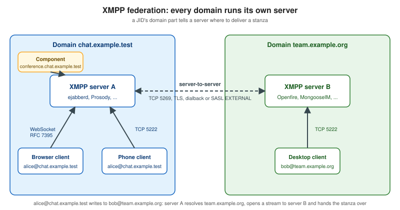

XMPP Fundamentals
|
This content was generated with the assistance of AI and should be verified against the official documentation before being relied on in production. |
The Chatterbox chat application of this section is built several times: on a custom WebSocket protocol (see Message Design and Serialization), and, on the pages of this XMPP group, on a standard protocol that already defines presence, rooms, history, receipts, corrections and reactions. This page is the foundation of the group. It explains how XMPP is organised, what a stanza looks like on the wire, how a client logs in and finds out what a server can do, how the standards process produces the extensions that the later pages use, and how to decide whether XMPP or a custom protocol fits a product.
The site already has a compact introduction to JIDs and stanzas written for chatbots in XMPP Bots, and a comparison of messaging protocols in Messaging Protocols. This page does not repeat them. It goes deeper on the parts a browser chat developer needs: the stream and authentication lifecycle, the roster, discovery, and the choice between XMPP and a hand-made protocol.
Versions and specification statuses were checked on 2026-10-24 (the exploration baseline was fixed on 2026-10-22):
RFC 6120, RFC 6121, RFC 7622 and RFC 7395 are Proposed Standards; the newest XMPP Compliance Suites document is
XEP-0479 (2023 edition, status Experimental); the servers used on these pages are ejabberd 26.09, Prosody 13.0.7,
Openfire 5.1.2 and MongooseIM 6.10.0; the browser libraries are Strophe.js 5.0.0, @xmpp/client 0.14.0 and Converse.js
14.0.1.
Architecture: clients, servers, federation and components
XMPP (the Extensible Messaging and Presence Protocol) is a protocol for streaming XML between two network endpoints. The
core, defined in RFC 6120, is deliberately small: it opens an XML stream, secures it with TLS, authenticates it with SASL,
binds a resource and then carries three kinds of XML elements, called stanzas. Everything else, from group chat to file
upload, is an extension (an XEP) that adds child elements to those three stanzas or new iq queries.
The architecture has three kinds of participant:
-
Clients connect to exactly one server, the one that hosts their account. A browser client connects with WebSocket (RFC 7395) or BOSH; native clients use TCP on port 5222 (STARTTLS) or 5223 (direct TLS).
-
Servers hold accounts, store the roster and offline or archived messages, and route stanzas. A server that receives a stanza for another domain opens a server-to-server (S2S) stream to that domain, found with DNS SRV records or the host-meta file, and delivers it there. This is federation: it works like e-mail, so users of
chat.example.testcan talk to users of any other domain without sharing a database. Federation can be switched off for a private deployment, and it has its own abuse problems (see the security page of this section). -
Components are services that attach to a server under their own domain, for example
conference.chat.example.testfor multi-user chat orupload.chat.example.testfor file upload. Modern servers run most components internally, but a standalone component can connect through the Jabber Component Protocol (XEP-0114).

Because the server holds the state (the roster, presence of all resources, the archive), a client can be thin, and several clients of the same account (resources) can be online at once. Chatterbox’s browser client, a phone client and a desktop client can share one account; the server fans stanzas out to the right resource.
JIDs
Every entity has a Jabber ID (JID), defined in RFC 7622 (which replaced RFC 6122):
localpart@domainpart/resourcepart
alice@chat.example.test/web-3f9a-
The domainpart is the server or service, and is the only mandatory part.
chat.example.testis a server andconference.chat.example.testis a component. -
The localpart identifies an account or, on a MUC service, a room (
general@conference.chat.example.test). -
The resourcepart identifies one connected client (
web-3f9a) or, in a room, a nickname.
Each part is at most 1023 bytes in UTF-8. The localpart and resourcepart go through the PRECIS profiles of RFC 8265
(case-folded for the localpart, case-preserved for the resource), so Alice@chat.example.test and
alice@chat.example.test are the same account. A bare JID (alice@chat.example.test) addresses the account: the server
picks the right resources. A full JID (alice@chat.example.test/web-3f9a) addresses one connection. Treat the bare JID
as the stable user identifier in Chatterbox (it plays the role of userId in the custom protocol) and never use a
full JID as an account key.
JID characters that the grammar forbids, such as @ or a space, must be escaped in a localpart with the rules of
XEP-0106 when a legacy identifier is mapped to a JID (for example an e-mail address becoming alice\40example.org).
XML streams over WebSocket
A native XMPP connection is one long XML document per direction: the client sends <stream:stream> and the server answers
with its own, and the stanzas are children of those roots. XML parsers do not work well on a document that never ends, and
a browser WebSocket delivers discrete messages anyway. RFC 7395 therefore changes the framing for WebSocket:
-
The WebSocket subprotocol token is
xmpp. -
Each WebSocket text message carries exactly one complete XML element: an
<open/>or<close/>element in theurn:ietf:params:xml:ns:xmpp-framingnamespace, or one stanza or stream-level element. -
The stream is restarted (after TLS or SASL) by sending a new
<open/>, with no new connection.
The following capture was taken from a local ejabberd 26.09 container by a small Node.js script using the ws package;
it is the entire login of a client up to resource binding (the base64 payload is the SASL PLAIN string for the test
account, a placeholder password on a loopback-only server, and the long lists were trimmed):
>> <open xmlns="urn:ietf:params:xml:ns:xmpp-framing" to="chat.example.test" version="1.0"/>
<< <open xmlns='urn:ietf:params:xml:ns:xmpp-framing' id='14624112876730713946' version='1.0' from='chat.example.test'/>
<< <stream:features xmlns:stream='http://etherx.jabber.org/streams'>
<mechanisms xmlns='urn:ietf:params:xml:ns:xmpp-sasl'>
<mechanism>PLAIN</mechanism><mechanism>SCRAM-SHA-512</mechanism>
<mechanism>SCRAM-SHA-256</mechanism><mechanism>SCRAM-SHA-1</mechanism>
<mechanism>X-OAUTH2</mechanism>
</mechanisms></stream:features>
>> <auth xmlns="urn:ietf:params:xml:ns:xmpp-sasl" mechanism="PLAIN">AGFsaWNlAGNoYW5nZS1tZS1hbGljZQ==</auth>
<< <success xmlns='urn:ietf:params:xml:ns:xmpp-sasl'/>
>> <open xmlns="urn:ietf:params:xml:ns:xmpp-framing" to="chat.example.test" version="1.0"/>
<< <open xmlns='urn:ietf:params:xml:ns:xmpp-framing' id='10523234531799669867' version='1.0' from='chat.example.test'/>
<< <stream:features xmlns:stream='http://etherx.jabber.org/streams'>
<bind xmlns='urn:ietf:params:xml:ns:xmpp-bind'/> <sm xmlns='urn:xmpp:sm:3'/>
</stream:features>
>> <iq xmlns="jabber:client" type="set" id="b1"><bind xmlns="urn:ietf:params:xml:ns:xmpp-bind"><resource>web</resource></bind></iq>
<< <iq xmlns='jabber:client' type='result' id='b1'><bind xmlns='urn:ietf:params:xml:ns:xmpp-bind'><jid>alice@chat.example.test/web</jid></bind></iq>Source: RFC 7395: An XMPP Subprotocol for WebSocket and
RFC 6120: XMPP Core. The plain ws:// URL above is acceptable only on a loopback
development server; the server offers PLAIN there because the connection is not encrypted. Over wss:// use a SCRAM
mechanism, which never sends the password. The browser-side details are on
XMPP in the Browser.
The three stanzas
All application traffic is carried by three stanzas. They share the addressing attributes to and from, a type and an
id, and carry their payload as child elements in their own namespaces.
message
A message is fire-and-forget: there is no acknowledgement in the core protocol. Its type is chat (one-to-one),
groupchat (room), normal, headline or error.
<message type="chat" to="bob@chat.example.test" id="01JAB3W7Q8Z4N5R6T7V8X9Y0ZA">
<body>Hello, Chatterbox</body>
<active xmlns="http://jabber.org/protocol/chatstates"/>
</message>The body is the human-readable text; extensions add siblings (chat states, receipts, a reply reference). A client that
does not understand a sibling ignores it, which is how XMPP stays extensible without breaking old clients. The message
id plays the same role as the Chatterbox envelope id: it is chosen by the sender and is the target of corrections,
receipts and reactions. See XMPP Chat Features.
presence
A presence stanza announces availability and is broadcast: a client sends one presence to its server and the server
sends it to every contact subscribed to the account. A presence with a to attribute is directed (this is how a client
enters a room). The optional show child is one of away, chat, dnd or xa; status is free text; priority
ranks the resources. type="unavailable" announces going offline and the server sends it on the client’s behalf when a
connection dies.
<presence>
<show>away</show>
<status>Back in ten minutes</status>
<priority>0</priority>
</presence>Presence is also the carrier of the subscription state machine described in the next section, using the types
subscribe, subscribed, unsubscribe and unsubscribed.
iq
An iq (info/query) stanza is a request and response pair, and the only stanza that must always be answered. Its type
is get or set for the request and result or error for the answer, and the id pairs them. Exactly one child
element, in some extension namespace, carries the query. Resource binding above, the roster fetch below, service discovery
and archive queries are all iq stanzas.
<iq type="get" id="roster-1">
<query xmlns="jabber:iq:roster"/>
</iq>An iq of type get or set that the recipient does not understand must be answered with an iq of type error and
the condition service-unavailable or feature-not-implemented. Clients should apply a timeout to their own requests,
because an unanswered iq is the only application-level acknowledgement the protocol has.
All three stanzas can answer with an error: the same stanza type is returned with type="error", the original payload
may be included, and an error child with a defined condition (item-not-found, forbidden, not-authorized,
bad-request, policy-violation and so on) explains the failure. These conditions play the role of the Chatterbox error
codes.
Login lifecycle
The lifecycle of a connection is the same for every XMPP client, native or browser:
The steps in order:
-
Stream open and features. The server advertises what it supports (SASL mechanisms, then after authentication the bind feature and optional features such as Stream Management).
-
Authentication with SASL (below). The stream restarts on success.
-
Resource binding. The client asks the server to bind a resource, or lets the server choose, and learns its full JID.
-
Roster fetch. The client downloads its contact list.
-
Initial presence. Until the client sends its first
presence, it is not "available" and receives no presence and, on most servers, no live messages for its resource. This is the single most common cause of "my client logs in but gets nothing" on a fresh implementation. -
Application traffic.
The roster and presence subscriptions
The roster is the server-side contact list of an account (RFC 6121). Each item has a jid, an optional display name,
optional group elements and a subscription state:
<iq type="result" id="roster-1" to="alice@chat.example.test/web">
<query xmlns="jabber:iq:roster" ver="ver42">
<item jid="bob@chat.example.test" name="Bob" subscription="both"><group>Team</group></item>
<item jid="carol@team.example.org" subscription="to"/>
</query>
</iq>Presence is subscription based. Alice sees Bob’s presence only when she has a subscription to Bob, and Bob has to approve it:
Roster subscription value |
Meaning |
|---|---|
|
Neither side receives the other’s presence. |
|
The account receives the contact’s presence (it subscribed, the contact approved). |
|
The contact receives the account’s presence. |
|
Presence flows both ways. |
The handshake is four presence types: Alice sends <presence type="subscribe" to="bob@chat.example.test"/>, Bob’s server delivers it,
Bob’s client answers type="subscribed", and the subscription moves to to (Alice) and from (Bob); Bob usually
replies with his own subscribe to make it both. unsubscribe and unsubscribed revoke it. Roster versioning
(the ver attribute) lets a client with a cached roster fetch only the changes, which matters for a web client that
reconnects often. A chat application whose rooms are all public does not need the roster at all: room presence is
handled by the room (see the multi-user chat section of the chat features page).
Authentication
XMPP authentication is SASL (RFC 4422) negotiated in the stream features. The mechanisms to know:
-
PLAIN sends the password in the clear inside the secured stream. It is acceptable only inside TLS, and the only way to use a password hash stored in a legacy backend.
-
SCRAM-SHA-1, SCRAM-SHA-256 and SCRAM-SHA-512 (RFC 5802 and RFC 7677) prove knowledge of the password without sending it, store only a salted verifier on the server, and have
-PLUSvariants that bind the exchange to the TLS channel (RFC 9266) so a man in the middle cannot relay it. Prefer SCRAM-SHA-256 or SCRAM-SHA-512, with-PLUSwhere the TLS library exposes channel binding (a browser WebSocket does not, so a browser client uses the plain SCRAM variants). -
OAUTHBEARER and X-OAUTH2 carry an access token instead of a password, which is how a browser can log in without ever holding the user’s password. See XMPP in the Browser for the token pattern.
-
EXTERNAL authenticates with a TLS client certificate or an already-established identity; ANONYMOUS gives a guest account.
Three newer specifications reduce round trips and avoid storing passwords, and are part of the 2023 Compliance Suites where noted below:
-
SASL2 (XEP-0388, Draft) replaces the stream-restart sequence with one
authenticateelement and lets the client attach inline features to it, so a server can authenticate, bind and enable Stream Management in a single exchange. -
Bind 2 (XEP-0386, Draft) is one of those inline features: it binds a resource and, in the same exchange, enables Carbons and Stream Management.
-
FAST (XEP-0484, status Proposed) lets the server issue a token at login that the client stores and presents next time instead of the password, which suits a web page that keeps a token in storage.
Not every server and library supports SASL2 yet. Check the XEPs it advertises in the stream features before relying on them, and fall back to the classic SASL plus bind sequence otherwise.
Reconnecting: Stream Management
A WebSocket that drops mid-conversation loses stanzas that were in flight. Stream Management (XEP-0198, Draft) adds a
counter on each side: after enable with resume="true", each side counts the stanzas it handled and acknowledges them
with <a h="N"/>. If the connection dies, the client reconnects, authenticates and sends <resume previd="s-42" h="7"/>;
the server restores the session (resources, presence, room membership) and resends whatever the client missed, with no
visible leave and rejoin. The server keeps the session for a bounded time (ejabberd’s resume_timeout, 300 seconds in the
test configuration). This is the XMPP counterpart of Chatterbox’s hello resume block, covered by
Connection Lifecycle, Heartbeats and
Reconnection.
Service discovery and capabilities
A client never has to guess what a server supports. Service Discovery (XEP-0030, Final) defines two iq queries:
<iq type="get" to="chat.example.test" id="d1">
<query xmlns="http://jabber.org/protocol/disco#info"/>
</iq>
<iq type="get" to="chat.example.test" id="d2">
<query xmlns="http://jabber.org/protocol/disco#items"/>
</iq>disco#info returns the identities and feature namespaces of an entity; disco#items lists its child entities. Asking
a local ejabberd for the items of its domain returned three components: conference.chat.example.test (multi-user chat),
pubsub.chat.example.test and upload.chat.example.test (HTTP File Upload). Asking its disco#info returned, among
others, urn:xmpp:mam:2 and urn:xmpp:carbons:2. A client checks for a namespace before it offers the feature, which is
how a user interface adapts to different servers.
Entity Capabilities (XEP-0115, Draft) avoids repeating those queries for every contact: a client puts a hash of its feature list in each presence, and receivers cache the answer by hash. This is also how a client learns that a contact’s client supports reactions or end-to-end encryption.
Standards and the XEP process
The XMPP Standards Foundation publishes extensions as XMPP Extension Protocols (XEPs). A XEP moves through the following statuses, and the status tells you how stable an implementation can expect the wire format to be:
| Status | Meaning |
|---|---|
Experimental |
Under discussion, may change incompatibly. Implementations exist, but treat the format as a moving target. |
Proposed |
Accepted for the standards track by the council, awaiting implementation experience. |
Draft |
Stable; two interoperable implementations exist. Changes are limited to clarifications. |
Final |
Complete and field-proven. |
Deferred |
No longer progressing (inactive), kept for reference. |
Obsolete / Retracted |
Replaced or withdrawn; do not implement. |
The XEPs that Chatterbox uses, with the status published on 2026-10-24:
| XEP | Title | Status | Page |
|---|---|---|---|
XEP-0030 |
Service Discovery |
Final |
this page |
XEP-0115 |
Entity Capabilities |
Draft |
this page |
XEP-0198 |
Stream Management |
Draft |
this page |
XEP-0388 / XEP-0386 |
SASL2 / Bind 2 |
Draft |
this page |
XEP-0484 |
FAST (token authentication) |
Proposed |
this page |
XEP-0156 |
Discovering Alternative XMPP Connection Methods |
Draft |
|
XEP-0045 |
Multi-User Chat |
Draft |
|
XEP-0313 |
Message Archive Management |
Draft |
|
XEP-0280 |
Message Carbons |
Draft |
|
XEP-0085 |
Chat State Notifications |
Final |
|
XEP-0184 |
Message Delivery Receipts |
Draft |
|
XEP-0333 |
Displayed Markers |
Draft |
|
XEP-0308 |
Last Message Correction |
Draft |
|
XEP-0424 |
Message Retraction |
Proposed |
|
XEP-0444 |
Message Reactions |
Experimental |
|
XEP-0461 |
Message Replies |
Experimental |
|
XEP-0363 |
HTTP File Upload |
Draft |
|
XEP-0384 |
OMEMO Encryption |
Experimental |
|
XEP-0166 / XEP-0167 |
Jingle / Jingle RTP Sessions |
Draft |
Source: XMPP Extensions index and the XEP list at xeplist.xml (statuses and versions copied on 2026-10-24).
Compliance Suites
With hundreds of XEPs, nobody can tell from a product page whether two clients and a server will work together. The XMPP Compliance Suites (XEP-0479 for the 2023 edition, the newest published one, at status Experimental and unchanged from the 2022 edition) group the XEPs by category and level:
-
Core and Web: RFC 6120, TLS (RFC 7590), service discovery, Entity Capabilities, and for Web the connection mechanisms RFC 7395 (WebSocket) or XEP-0206 (XMPP over BOSH), plus XEP-0156 for clients.
-
IM: RFC 6121 (roster and presence), Message Carbons, User Avatar, the blocking command, the MUC and MAM families, HTTP File Upload, and so on.
-
Mobile: Stream Management, Client State Indication and Push Notifications.
-
A/V Calling: Jingle audio and video with ICE-UDP and DTLS-SRTP transports, and External Service Discovery for TURN.
Each category has a Server, Client, Advanced Server and Advanced Client level. When you pick a server or a client library for Chatterbox, compare the suites they claim: a server that is IM and Web compliant at the Advanced level supports everything on the chat features page. See the XMPP servers page, XMPP Servers, for the servers compared.
Chatterbox on XMPP
The custom Chatterbox v1 protocol and XMPP cover the same features, so the XMPP variant of Chatterbox is mostly a mapping exercise:
| Chatterbox v1 | XMPP equivalent | Specification |
|---|---|---|
|
SASL (token or SCRAM), Bind 2, Stream Management |
RFC 6120, XEP-0388, XEP-0386, XEP-0198 |
|
Directed |
XEP-0045 |
|
|
XEP-0045 |
|
|
RFC 6121, XEP-0461 |
|
A new |
XEP-0308 |
|
A |
XEP-0444 |
|
Chat state |
XEP-0085 |
|
|
XEP-0184, XEP-0333 |
|
|
XEP-0199, XEP-0198 |
|
An archive |
XEP-0313 |
|
Message reflection, Stream Management acks and |
RFC 6120 |
|
HTTP upload slot and an out-of-band URL |
XEP-0363 |
The remaining pages of the group build this mapping: the servers, the browser libraries, the full feature set with stanza examples, an embeddable client and the optional encryption and calls.
XMPP or a custom protocol
XMPP is a good fit when the product wants what XMPP already is:
-
Standard features that already exist. Rooms with roles and affiliations, history with paging, receipts, corrections, file upload, push notifications for mobile and end-to-end encryption are specified, implemented in several servers and in off-the-shelf clients such as Converse.js. A custom protocol re-invents each of them.
-
Federation or many clients. If users must reach other domains, or if third-party and native clients should connect, a standard protocol is a requirement rather than an option.
-
Ready servers and clients. ejabberd, Prosody, Openfire and MongooseIM scale, cluster and monitor out of the box.
A custom WebSocket protocol is the better fit when:
-
the messages are not chat-shaped (a game’s input and snapshots, or a binary media stream);
-
the product needs a data model XMPP does not provide (threads with per-conversation sequence numbers, rich cards, or a proprietary permission model), and mapping it onto stanza extensions costs more than writing the protocol;
-
the team does not want to operate an XMPP server, or wants one codebase and one language for server and client; or
-
the payload is dominated by non-text data: XML is verbose and a binary or JSON protocol is smaller.
A hosted chat service is a third option and takes the operations away at the cost of lock-in; the architecture page Chat Architecture compares the three for Chatterbox. A one-line note on a related project: Matrix is a separate federated protocol with a different model (a replicated event graph per room rather than stanzas routed between servers); this section does not cover it.
Security
-
TLS is mandatory. RFC 6120 requires servers and clients to support TLS, and RFC 7590 describes how to use it. In a browser that means
wss://for the stream andhttps://for the host-meta file. The plainws://capture above is for a loopback development server only. -
Allow-list
Originin the reverse proxy. A browser attaches the page’sOriginto the WebSocket upgrade, but the ejabberd 26.09 used on these pages accepted the upgrade from any origin. Reject unexpected origins at the proxy in front of the server (see Proxies, Load Balancers and Deployment). The XMPP login still has to succeed afterwards, but an open origin lets any web page drive a stream that holds a user’s session token. -
Choose the authentication mechanism deliberately. Offer SCRAM-SHA-256 or SCRAM-SHA-512, keep PLAIN for TLS-protected legacy backends, and prefer tokens (OAUTHBEARER, X-OAUTH2 or FAST) so the page never stores a password. SASL2 lets the server limit what an unauthenticated client may do before the exchange finishes.
-
Registration and account enumeration. In-band registration lets anyone create accounts; close it or put it behind a CAPTCHA, an invitation or an e-mail check. Error replies and presence subscriptions can reveal whether a JID exists, so rate-limit them.
-
The roster and presence leak information. A
subscribedpresence shows a contact when you are online, your status text and your resources. Do not auto-accept subscriptions, and remember that a full JID reveals the resource name. -
Federation. Server-to-server streams bring spam and abuse from other domains. Disable them for a private deployment, or restrict them to an allow-list of domains, and require TLS and certificate validation between servers.
-
Addresses. Normalise JIDs as RFC 7622 describes before comparing them or using them for access control, because look-alike Unicode characters make two different strings look like one name.
-
End-to-end encryption. TLS protects the hops, but the server sees message bodies. See OMEMO Encryption for the end-to-end option.
Version notes
-
Core RFCs. RFC 6120 and RFC 6121 (2011) obsolete RFC 3920 and RFC 3921, and RFC 7622 (2015) obsoletes RFC 6122 for addresses. Older tutorials that cite the 2004 documents describe the same protocol with an older address format.
-
WebSocket. RFC 7395 (2014) is the framing used here: subprotocol
xmpp, one element per message and theurn:ietf:params:xml:ns:xmpp-framingnamespace. A client finds the endpoint through/.well-known/host-meta(XEP-0156). BOSH (XEP-0124 and XEP-0206) is the older fallback and is still supported by most servers. -
Authentication. Classic SASL with a stream restart and a separate bind is what every server supports. SASL2 (XEP-0388), Bind 2 (XEP-0386) and FAST (XEP-0484) are newer and not universal; check the stream features. Non-SASL authentication (XEP-0078) is obsolete.
-
Compliance Suites. XEP-0479 (2023 edition) is the newest published suite. Its status is Experimental, so read it as a guide to what current clients implement and not as a certification.
-
Servers and libraries. The examples use ejabberd 26.09, Strophe.js 5.0.0 and
@xmpp/client0.14.0. A server that advertises other namespace versions than the ones shown is the authority; readdisco#infobefore relying on one.
Common errors and pitfalls
-
No messages after login. The client never sent initial
presence. Send an emptypresenceafter the roster fetch. -
Using the full JID as the user identifier. The resource changes on every connection. Store the bare JID.
-
Comparing JIDs as raw strings. Case folding and PRECIS rules mean
Alice@Example.testequalsalice@example.test. Parse and normalise first (Strophe.js hasStrophe.getBareJidFromJid,@xmpp/jidhas ajid()function). -
Ignoring
type="error". A failediqormessagecomes back as an error stanza and a client that drops it never shows the user that, say, a room is members-only. -
Treating a
messageas acknowledged. The core protocol gives no delivery guarantee. Use Stream Management acks for "the server got it" and receipts (XEP-0184) for "the other client got it". -
Putting the password in the page. Prefer a short-lived token (OAUTHBEARER, X-OAUTH2 or FAST) over a stored password.
-
Leaving federation open on a private server. Disable server-to-server connections or restrict them to an allow-list if Chatterbox does not need federation.